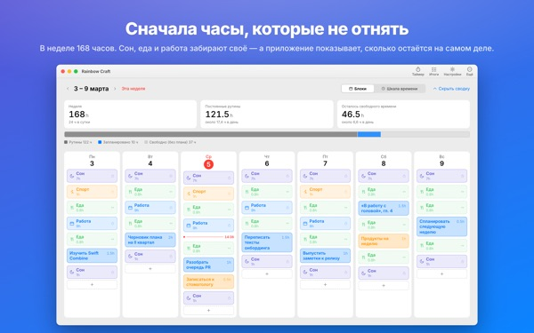
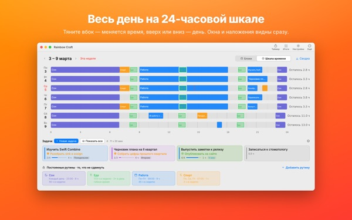
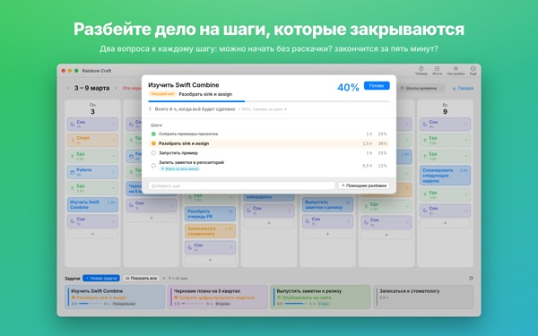
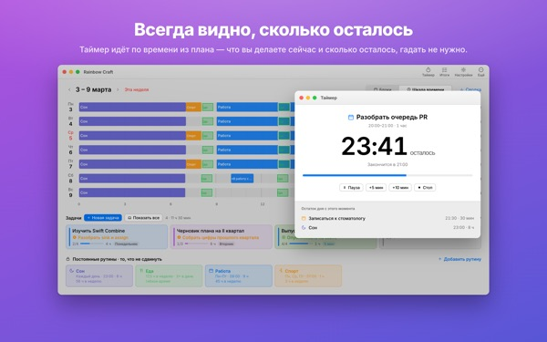
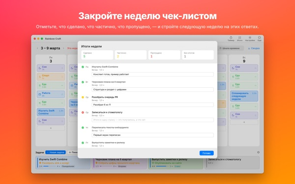

Всё это правда
влезет в неделю?
Rainbow Craft раскладывает неделю на Mac по дням и часам. Начните со времени, от которого не отказаться, вроде сна, еды и работы, перетащите задачи в оставшиеся промежутки и посмотрите, что действительно помещается.
Планирование, рутины, задачи, итоги недели, таймер и импорт календаря бесплатны.

Спланируйте неделю прямо здесь
Мы поставили четыре рутины, которые приложение предлагает при первом запуске. Включайте и выключайте их и кладите задачи на дни.
Список растёт, а неделя нет.
Список дел не говорит, вместит ли его ваша неделя. Когда сон, еда и дорога забрали своё, остаётся меньше, чем кажется. Rainbow Craft показывает эти часы цифрами и клетками и даёт примерить каждую задачу к настоящему месту в расписании.
День на 24-часовой линейке
Шкала времени раскладывает день на 24-часовую линейку. Пробелы и наложения видны сразу, а как расположить пересекающиеся дела, решаете вы.
Встречи и события из Календаря на Mac подтягиваются, их не нужно вводить дважды. При желании планы можно записывать в отдельный календарь Rainbow Craft и видеть их на iPhone. Другие календари не меняются.

Делите большое на шаги, которые заканчиваются
Большие дела застревают, когда что-то ещё мешает. Про каждый шаг приложение задаёт два вопроса: можно ли начать без разгона? Уложитесь ли в пять минут?
Если оба ответа «да», это фрагмент на любые свободные пять минут. Остальному нужно отдельное время. Если приложение ошиблось, решайте сами.

Чем вы заняты и сколько осталось
В момент начала план становится текущим, а когда время выходит, приложение спрашивает, закончили ли вы. Таймер идёт по расписанию.
Виджет «Таймер «Сейчас»» показывает текущее дело и оставшееся время без открытия приложения.

Закройте неделю чек-листом
В итогах недели по карточке на каждый день. Отметьте, что сделано, сделано наполовину или пропущено, и спланируйте по этому следующую неделю.
При одном аккаунте iCloud задачи ходят между этим приложением и Rainbow of Desire на iPhone, так что день, спланированный на Mac, всегда с собой.

Три шага, чтобы начать
- 1
Задайте постоянное время
То, что повторяется каждую неделю, например сон, еда и работа, оформите как рутины. Приложение ничего не заполняет за вас.
- 2
Запишите задачи
По одной строке в разделе «Задачи» внизу. Когда их делать, решать пока не нужно.
- 3
Перетащите на дни
Положили задачу на день, и она стала планом. Сдвинулась дата? Перетащите на другой день или обратно в список.
Расчёт с предложенными рутинами
- Неделя
- 168 часов
- Сон · 8 часов в день
- 56 часов
- Еда · три раза в день
- 17,5 часа
- Работа · учёба · 9 часов по будням
- 45 часов
- Спорт · 1 час Пн, Ср, Пт
- 3 часа
- Время, которое реально есть на этой неделе
- 46,5 часа
Это лишь пример. Выбирайте и настраивайте рутины под свою жизнь. В отпуск или командировку уберите работу только из этого дня.
Всё, что нужно, чтобы прожить эту неделю, бесплатно
Бесплатно
- Планы на неделю и день, рутины и задачи без ограничений
- Шкала времени и деление на шаги
- Итоги недели с копированием в текст
- Таймер и виджет «Таймер «Сейчас»»
- Импорт из календаря
- Синхронизация с Rainbow of Desire на iPhone
- Тренды за последние 2 недели
Plus · Pro
- Plus: тренды за 8 недель, ваши лучшие дни и часы
- Plus: план и факт
- Plus: перенести план удачной недели целиком на эту
- Pro: всё из Plus и ссылка только для просмотра на ваше расписание
- Pro: одна покупка открывает Pro и в приложении для iPhone
Каждый уровень: годовая подписка или разовая покупка навсегда
Цены указаны в приложении и в App Store. Годовая подписка продлевается автоматически, если не отменить её минимум за 24 часа до конца периода. Pro, купленный на iPhone, работает и на Mac с тем же аккаунтом iCloud.
Частые вопросы
Обязательно входить в iCloud?
Нет, если пользоваться только на Mac. iCloud нужен для синхронизации с iPhone и для того, чтобы делиться расписанием.
Приложение меняет мои календари?
Существующие календари не меняются никогда. Импорт только читает выбранные календари. Если включить запись планов в календарь Rainbow Craft, приложение создаст отдельный календарь и будет писать только в него. Удалить его можно в любой момент в приложении «Календарь».
Задачи с Mac не появляются на iPhone.
Проверьте, что на обоих устройствах один аккаунт iCloud и на iPhone установлено Rainbow of Desire. Синхронизация идёт через iCloud и может занять несколько минут.
Закрытие окна завершает приложение?
Нет. Приложение продолжает работать. Окно можно снова открыть через меню «Окно» или щелчком по значку в Dock.
Что будет с задачами и планами после обновления?
Всё останется как есть. Обновления не меняют и не удаляют то, что вы написали.
Как сменить язык приложения?
Выберите его в самом верху настроек, в пункте Language · 언어 · 語言, и приложение перезапустится на этом языке. Языков 23. Названия рутин и задачи, которые вы написали сами, не переводятся.
Сменил Mac, и Plus или Pro пропал.
Войдите с тем же Аккаунтом Apple и нажмите «Восстановить покупку» в настройках. Отменить подписку можно в настройках учётной записи в App Store.
Где хранится то, что я пишу?
Нет ни аккаунта, ни регистрации, ни сервера разработчика с вашими планами. Всё написанное остаётся на ваших устройствах и в вашем iCloud. Приложение отправляет анонимную статистику без вашего содержимого, её можно выключить в настройках пунктом «Отправлять анонимную статистику».
Застряли или что-то не так? Напишите на mizzking75@gmail.com. В настройках приложения тоже есть пункт для связи.